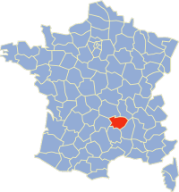

Gîte for Groups

Our gîte/hostel can accomodate 19 people and is accredidated by the Agrément Jeunesse et Sport. We offer rooms with meals included or without.
We enjoy sharing our home with others. Our gîte is well suited for hosting foster children or mentally handicapped individuals accompanied by aids or mentors.
Our gîte has 3
private rooms each with its own shower and sink, a dormitory that
sleeps 15 people, a common room with a kitchenette and cooking
supplies, a working fireplace and a terrace.
Our
house is 3 km from the center of town. The farm is
located in Retournac, a small village on the Loire in the Haute-Loire
department of Auvergne. Retournac is 35 km from Le
Puy-en-Velay and 56 km from Saint-Etienne. Lyon is a 2-hour
train ride from the center of Retournac. How
to get there...
{kind=link}


Tarifs 2008
| Room only | 13€ per night |
| Room and 3 meals - Adult | 32€ per day |
| Room and 3 meals - Child (under 10 years) | 25€ per day |
| Room and any 1 meal - Adult | 27€ per day |
| Room and any 1 meal - Child (under 10 years) | 19€ per day |
04-71-59-45-78 savitricolin@wanadoo.fr